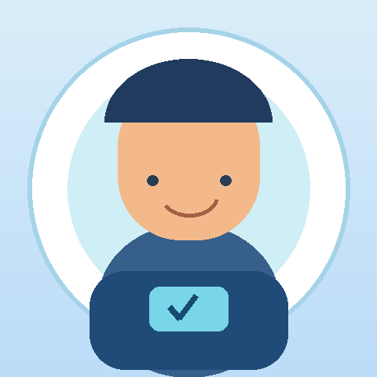

Hello
BASICS
Center
Position a child in the available space.
Explore Center API ↗Build a simple Digital ID, discover how widgets work, and make the star button play a tiny chime using a package from pub.dev.
Run one clear, beginner-friendly screen. Locate main.dart and pubspec.yaml, register your image, and trace the widget tree.
Use the Widget Catalog, class APIs, and pub.dev to find the right widget and a small audio package yourself.

You already know classes, constructors and methods. Today you will use those concepts to read a real Flutter project, find unfamiliar widget classes in the official docs, and change a UI without copying every line from the instructor.

Your NamePDB2 · Junior Flutter DeveloperPhase 1: Build the screen and add its local image. Phase 2: Press the star FloatingActionButton to play a short sound using a package found on pub.dev.
Create one Flutter project and use it throughout the lesson. You will start with a local profile image, a name, a subtitle and a star FloatingActionButton. The star has an empty callback for now; you will connect it to a sound in Step 07.
The Digital ID uses MaterialApp, Scaffold, Center, Column, CircleAvatar, Text and one FloatingActionButton. First see it on screen; next we will investigate the structure and the source of its image.
Ctrl+Shift+P).first_flutter_explorer and choose its parent folder.F5).flutter pub add material_ui before using our updated Digital ID
source.Image.asset or AssetImage file is not
available inside a remote DartPad Gist.Create your project, copy the starter main.dart and student_avatar.png, then register the image path in the generated pubspec.yaml. Follow the starter guide; do not replace the whole pubspec.
flutter pub add material_ui
once in your project before using the code below. Older books and tutorials may show
import 'package:flutter/material.dart';. That SDK import is now deprecated but still works
during the transition; DartPad may still need it. import 'package:material_ui/material_ui.dart';
void main() => runApp(const DigitalIdApp());
class DigitalIdApp extends StatelessWidget {
const DigitalIdApp({super.key});
@override
Widget build(BuildContext context) {
return MaterialApp(
debugShowCheckedModeBanner: false,
home: Scaffold(
backgroundColor: const Color(0xFFF0F6FC),
appBar: AppBar(title: const Text('My Digital ID')),
body: const Center(
child: Column(
mainAxisSize: MainAxisSize.min,
children: [
CircleAvatar(
radius: 64,
backgroundImage: AssetImage('assets/images/student_avatar.png'),
),
SizedBox(height: 16),
Text('Your Name',
style: TextStyle(fontSize: 28, fontWeight: FontWeight.bold)),
SizedBox(height: 6),
Text('PDB2 · Junior Flutter Developer'),
],
),
),
floatingActionButton: FloatingActionButton(
onPressed: () {}, // We will learn button behavior later.
child: const Icon(Icons.star),
),
),
);
}
}
Your Name, check the star button
position, then change Icons.star to Icons.favorite and compare. No action is
programmed yet.If the avatar does not appear, verify its exact path, case, and indentation inside the generated pubspec. After adding an asset, stop and restart the app if hot reload does not pick it up. Run flutter devices if Chrome or Android is missing.
flutter pub add material_ui in the project terminal. Inspect the new dependency in
pubspec.yaml.
student_avatar.png from starter/assets/images/ to
assets/images/ in your generated Flutter project.
pubspec.yaml. Under its existing flutter: key,
declare assets/images/student_avatar.png.flutter pub get, then flutter run -d chrome. Confirm that the image
appears.Run flutter devices and check that Chrome appears. If your Android emulator is slow, use
Chrome first. If Flutter is not recognized, return to Session 02’s SDK/PATH checklist. If packages cannot
download because of connectivity, use the previously installed SDK and cached packages; do not install
unrelated dependencies for this lesson.
Your first project contains application code, configuration, generated platform files and tooling metadata. Click each file in our explorer, then find the real file in VS Code.
The source code lives in lib/, but the pubspec.yaml at the project root
describes the package, dependencies and assets. Platform folders and test files have other
responsibilities. Learn the map so you know where to look first.
main.dart and pubspec.yaml.Choose a file on the left to learn its job. Then open that exact file in your actual VS Code project.
You just registered a real image. Here we inspect WHY that works: pubspec identifies your application, manages its packages, and lists the local files Flutter must bundle.
name: first_flutter_explorer
# ... keep your generated environment/dependency settings ...
dependencies:
flutter:
sdk: flutter
# material_ui is added with: flutter pub add material_ui
# audioplayers is added later using flutter pub add audioplayers
flutter:
uses-material-design: true
assets:
- assets/images/student_avatar.png
# - assets/audio/star_chime.wav # Uncomment in Step 07, after copying file
Choose an answer.
Copy the image file into your Flutter project, list its path under the existing flutter/assets section in pubspec.yaml, and run flutter pub get. The audio file will be registered later.assets: key or inconsistent indentation changes the meaning of the file. Keep the
original generated environment: constraint; never copy a placeholder as executable YAML.Official reference: Flutter pubspec options ↗ · Package dependency management ↗
Trace your Digital ID: main() creates DigitalIdApp; build() describes MaterialApp → Scaffold → Center → Column → image and text. The floating star button belongs directly to Scaffold, not inside the Column.
DigitalIdApp is a Dart class extending StatelessWidget. Its build() method returns a Widget. CircleAvatar uses an image asset, while FloatingActionButton occupies a separate named Scaffold property.
Run this example and compare its nesting with the interactive tree below. The code still uses ordinary Dart OOP constructs.
import 'package:flutter/material.dart';
void main() => runApp(const ExplorerApp());
class ExplorerApp extends StatelessWidget {
const ExplorerApp({super.key});
@override
Widget build(BuildContext context) {
return MaterialApp(
debugShowCheckedModeBanner: false,
home: Scaffold(
appBar: AppBar(title: const Text('Follow the widget tree')),
body: const Center(
child: Text('A Text widget inside Center inside Scaffold'),
),
),
);
}
}
ExplorerApp extends StatelessWidget; it defines a const constructor and overrides Widget build(BuildContext context). Named arguments include home:, appBar:, body:, and child:.
Choose a node to learn its responsibility and open the official class reference.
Choose an answer.
The build method describes a widget subtree. Flutter calls it as needed; you do not call it manually to paint the screen.StatelessWidget is
enough. We will examine StatefulWidget, setState, and state management in later
sessions.This is a professional developer skill. Learn when to read a guide, when to browse widgets, when to inspect an API class, and how to follow related types. Do not rely on copying the first search result.
Documentation is a set of different tools: guides for concepts, the Widget Catalog for visual discovery, API references for exact signatures, the Cookbook for task recipes, and pub.dev for external packages. Each answers a different question.
Open the official Text class API ↗ in another tab. The panel below is an instructional anatomy, not a live copy of the documentation page.
Find its description and examples. Ask which problem it solves before reading every available property.
style property. Follow its link to the TextStyle
class.fontSize and fontWeight in the related type.Text('hello', style: TextStyle(fontSize: 24)) passes a positional string and a named
style argument. style expects a TextStyle?, so following the
TextStyle class is the next research step. The type links in API signatures are valuable
navigation tools.
backgroundImage, then follow its type to
ImageProvider and AssetImage. This is exactly how to research unfamiliar
constructors instead of memorizing them.
Use the documentation to explain each argument before running this example. In your IDE, replace the
current lib/main.dart after keeping a copy if you want to compare.
import 'package:flutter/material.dart';
void main() => runApp(const ExplorerApp());
class ExplorerApp extends StatelessWidget {
const ExplorerApp({super.key});
@override
Widget build(BuildContext context) {
return MaterialApp(
debugShowCheckedModeBanner: false,
home: Scaffold(
appBar: AppBar(title: const Text('Read the API, then edit')),
body: const Center(
child: Text(
'I found this in the API reference!',
textAlign: TextAlign.center,
style: TextStyle(fontSize: 24, fontWeight: FontWeight.bold),
),
),
),
);
}
}
fontSize and
textAlign. Predict how the text will move or look.
The text becomes larger/smaller when fontSize changes. TextAlign controls alignment within the Text widget’s available width; the surrounding Center still controls positioning of the widget as a whole.
package:flutter/material.dart import. In your Flutter 3.50+ local project, use
package:material_ui/material_ui.dart after running flutter pub add material_ui. Do
not mix both design libraries in the same app. Read the short version note ↗
A professional Flutter developer rarely memorizes the whole Widget Catalog. Instead, they identify the problem, browse a relevant category, view examples, and open the class API.
The official Widget Catalog groups foundational widgets under categories such as Basics, Layout, Text, Input, Scrolling and Assets. Material and Cupertino are design systems. The gallery helps you recognize a component visually; the API explains its exact usage.
Click a category. You will see an example widget, what task it helps with, and a link to the official documentation.
Position a child in the available space.
Explore Center API ↗Arrange children vertically.
Explore Column API ↗Display a string with optional styling and alignment.
Explore Text API ↗Accept editable text from a user.
Explore TextField API ↗Display image resources, including local assets.
Explore Image API ↗Prominent floating action; it is placed in Scaffold.floatingActionButton.
Explore FAB API ↗Choose a category. The next hint will help you find a widget and its API class.
Visual reference: Material 3 Demo source and components ↗ · Full Widget Catalog ↗
Your Digital ID already runs. Now research one Flutter package on pub.dev and use it to play a short, bundled sound when the student presses the star FloatingActionButton. The profile image remains visual only.
The Widget Catalog helps you find UI classes. pub.dev helps you find packages when you need an additional capability. Read the package README, supported platforms, installation instructions, and API before importing it.
flutter pub add audioplayers. Confirm a new entry under
dependencies: in your own pubspec.yaml.
starter/assets/audio/star_chime.wav to your project's assets/audio/
folder, then register it under flutter: assets: alongside the existing image.FloatingActionButton.onPressed callback to call
_playStarSound. Read AssetSource to play the file from the Flutter
bundle.
Use the checklist to record evidence from your real Flutter project.
Search for audioplayers. Look at the latest version and SDK compatibility, supported platforms, Readme, Installing, Example, and API reference. Decide whether it supports web and Android before using it.
Visit audioplayers on pub.dev ↗flutter pub add audioplayersThen
check the filepubspec.yaml → dependencies: → audioplayersAnd the
sourceimport 'package:audioplayers/audioplayers.dart';flutter pub add audioplayers do?Choose an answer.
pub add adds the dependency to pubspec.yaml and resolves packages. Asset registration and connecting the star button callback are separate tasks.assets/audio/star_chime.wav in the pubspec. The audioplayers AssetSource uses
audio/star_chime.wav with its usual assets/ cache prefix. Do not put
assets/ twice. After changing packages or assets, stop and restart if needed.
Only use this reference after you have installed audioplayers and registered the local image and WAV file. The avatar is unchanged. The FloatingActionButton now calls _playStarSound through its onPressed callback.
import 'package:material_ui/material_ui.dart';
import 'package:audioplayers/audioplayers.dart';
// One audio player for this tiny teaching app (no UI state needed).
final AudioPlayer _starPlayer = AudioPlayer();
Future<void> _playStarSound() async {
await _starPlayer.stop();
await _starPlayer.play(AssetSource('audio/star_chime.wav'));
}
void main() => runApp(const DigitalIdApp());
class DigitalIdApp extends StatelessWidget {
const DigitalIdApp({super.key});
@override
Widget build(BuildContext context) {
return MaterialApp(
debugShowCheckedModeBanner: false,
home: Scaffold(
backgroundColor: const Color(0xFFF0F6FC),
appBar: AppBar(title: const Text('My Digital ID')),
body: Center(
child: Column(
mainAxisSize: MainAxisSize.min,
children: [
const CircleAvatar(
radius: 64,
backgroundImage: AssetImage('assets/images/student_avatar.png'),
),
const SizedBox(height: 16),
const Text('Your Name',
style: TextStyle(fontSize: 28, fontWeight: FontWeight.bold)),
const SizedBox(height: 6),
const Text('PDB2 · Junior Flutter Developer'),
],
),
),
floatingActionButton: FloatingActionButton(
onPressed: _playStarSound, // Press the star to play the chime.
child: const Icon(Icons.star),
),
),
);
}
}
AudioPlayer
object, FloatingActionButton.onPressed, and the AssetSource path. Explain each
using official docs/pub.dev.Pressing the star FloatingActionButton starts the sound. The avatar remains just an image. No SnackBar and no state mutation were added.
Saving an edited widget usually enables hot reload in an active debug session, or press r in
the running Flutter terminal. Some changes, including edits to main() or initializers,
require a hot restart. A complete stop/re-run may be needed for configuration or asset changes.
Reference: How hot reload works ↗ and Flutter in VS Code ↗.
You have a running Digital ID, one registered image, and experience finding a plugin on pub.dev. Continue discovering Flutter widgets from official documentation—without adding a complicated UI framework.
Investigate three widgets from different catalog categories. For each, find its official class API, inspect the constructor and two parameters, and note one related type. Implement one small change in your existing Digital ID.
Submit a single ZIP named StudentName_WidgetDiscovery.zip with your report, modified main.dart, and one screenshot. Your screenshot must show your Digital ID with a local image and star FAB.
Research rule: Learn from official Flutter documentation and pub.dev rather than pasting complete solutions. Your report must mention one related class link. Do not add unnecessary packages for homework.
Choose an answer.
The API reference lists constructor signatures and property types, which link to related classes such as TextStyle.Choose an answer.
Declare dependencies in pubspec.yaml and run flutter pub get; the resolved versions are recorded in pubspec.lock.Choose an answer.
The Widget Catalog/gallery helps narrow the component category, then the API reference explains constructors and properties.The upcoming sessions will systematically explore widgets and layout. You are no longer starting from an empty screen — you have a project and a repeatable documentation method.